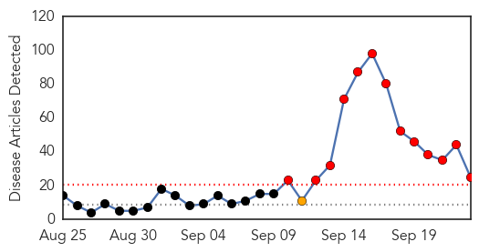
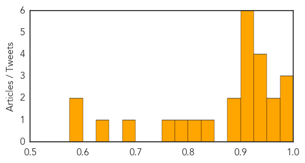
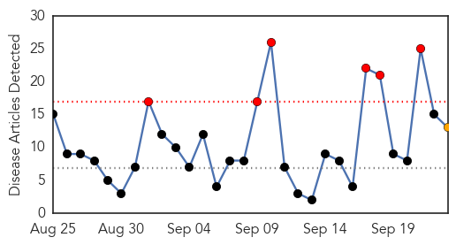
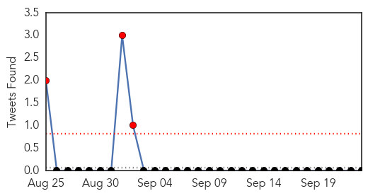
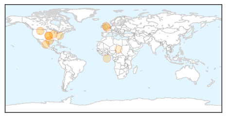

Dengue Fever
30-Day Web Trend
13 alerts, 1 warnings

30-Day Twitter Trend
3 alerts, 0 warnings

Article Locations

Article Confidences
Top Articles:
- 0.998
- Dengue favours K’taka, but Delhi hogs the limelight
- 0.995
- In Faridabad district, number of patients soars to 45
- 0.995
- Dengue fever prevention needs community efforts
- 0.972
- Cavite starts campaign to curb dengue outbreak
- 0.957
- Health Ministry issues fresh advisory to Delhi Govt. on Dengue - India
- 0.949
- Punjab: With 129 dengue cases, Khanna under the scanner
- 0.940
- Avoid platelet transfusion early for dengue, doctors told
- 0.934
- 2 more deaths take dengue toll to 28
- 0.928
- India Had 10,834 Acute Encephalitis Syndrome Cases; 1,652 Japanese Encephalitis Cases
- 0.925
- Dist Hospital gets 50 additional beds
- 0.923
- Japanese Encephalitis a bigger threat than dengue: Jharkhand health dept
- 0.923
- WHO steps up response in Yemen as health facilities continue to shut down
- 0.923
- WHO steps up response in Yemen as health facilities continue to shut down - Xinhua
- 0.912
- Dengue crisis in Delhi deepens: Toll climbs to 28
- 0.911
- Cavite under state of calamity
- 0.885
- Dengue cases in Delhi reaches to 17, toll may go higher
- 0.884
- Dengue toll reaches 27, officials say actual figure could be higher
- 0.844
- Over 700 calls in 4 days to Chandigarh’s dengue helpline
- 0.807
- Union Health Minister reviews facilities for Dengue patients in central government hospitals in Delhi - India
- 0.795
- War against dengue rages on in south Delhi
- 0.768
- Nagpur Today : Nagpur News
- 0.687
- In tackling dengue crisis, govt’s flagship mohalla clinics falter before take-off
- 0.648
- NMC must draft sub-laws for monitoring marriage halls, lawns: Meher
- 0.597
- Corporations wake up to dengue crisis
- 0.580
- Namakmandi serving as breeding ground for mosquitoes
Top Tweets:
-
No tweets found for Sep 23, 2015
Influenza
30-Day Web Trend
6 alerts, 1 warnings

30-Day Twitter Trend
3 alerts, 0 warnings

Article Locations
Article Confidences

Top Articles:
- 0.997
- Flu Season almostHere
- 0.993
- The Flu is Back: Experts Say It's Time to Get Your Annual Vaccine
- 0.980
- Two cases of influenza prompt concern in Gallatin Co.
- 0.979
- Drive-through flu shot clinic held in Great Falls - KRTV.com
- 0.965
- 3 flu cases confirmed in Bernalillo County
- 0.949
- New pig flu strain may be going undetected on farms
- 0.946
- Illinois Department of Public Health recommends mass flu vaccina
- 0.887
- Number of Influenza A patients up in Chitwan
- 0.791
- Flu vaccine promises to be far more effective this year
- 0.731
- Information about avian flu important for backyard chicken owners
- 0.637
- US plan to suffocate poultry in AI outbreaks condemned
- 0.593
- Possible contributor to the virulence of the 1918 flu pandemic discovered
- 0.538
- Free flu shot clinics scheduled in Glenn County
Top Tweets:
-
No tweets found for Sep 23, 2015